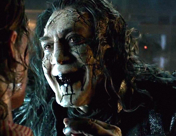
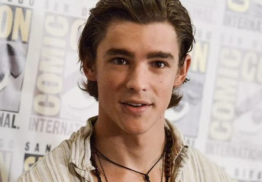
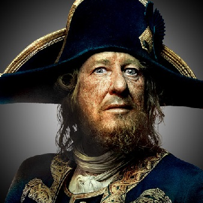

Pirates of the Caribbean: Dead Men Tell No Tales (also known as Pirates of the Caribbean: The Revenge of Salazar and Pirates of the Caribbean: Salazar's Revenge) is an upcoming American fantasy swashbuckler film, and the fifth installment in the Pirates of the Caribbean film series. The film is directed by Joachim Rønning and Espen Sandberg from a script by Jeff Nathanson, with Jerry Bruckheimer serving again as producer. Johnny Depp, Geoffrey Rush, and Kevin McNally reprise their roles as Jack Sparrow, Hector Barbossa, and Joshamee Gibbs, respectively. The film also stars Javier Bardem as Capitán Salazar, Brenton Thwaites as Henry, and Kaya Scodelario as Carina Smyth. The film also features the return of Orlando Bloom as Will Turner, following his absence from the fourth installment, On Stranger Tides.
The filmmakers cited the first installment, The Curse of the Black Pearl, as inspiration for the script and tone of the film. Pre-production for the film started shortly before On Stranger Tides was released in early 2011, with Terry Rossio writing a script for the film. In early 2013, Jeff Nathanson was hired to write a new script, with Depp being involved in Nathanson's writing process. Initially planned for a 2015 release, the film was delayed to 2016 and then to 2017, due to script and budget issues. Principal photography started in Australia in February 2015, after the Australian government offered Disney $20 million of tax incentives, and ended in July 2015. It is set to be released in conventional, Disney Digital 3-D, RealD 3D, and IMAX 3D formats on May 26, 2017.
For more Info: wikepedia
Cast And Crew

|
 |  |  |

|

|